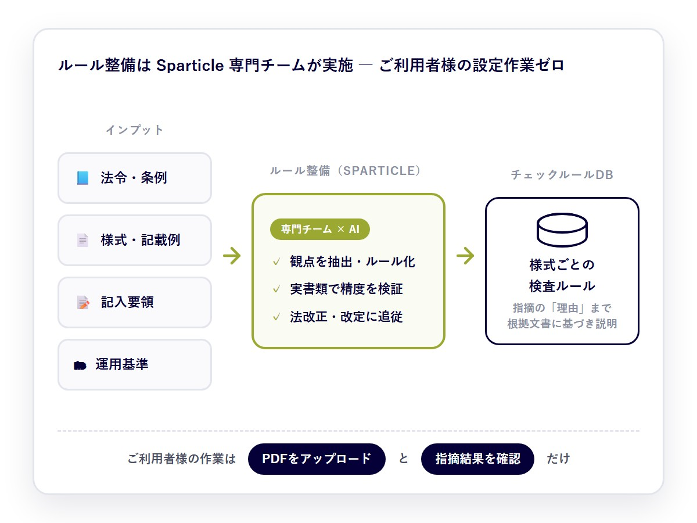
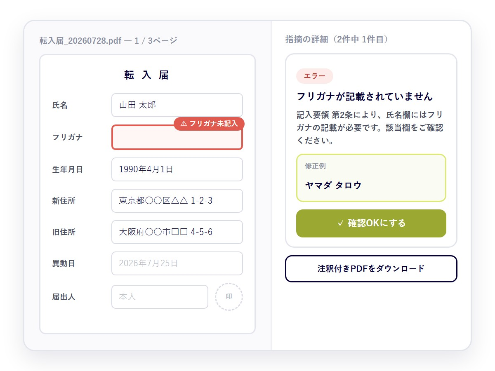
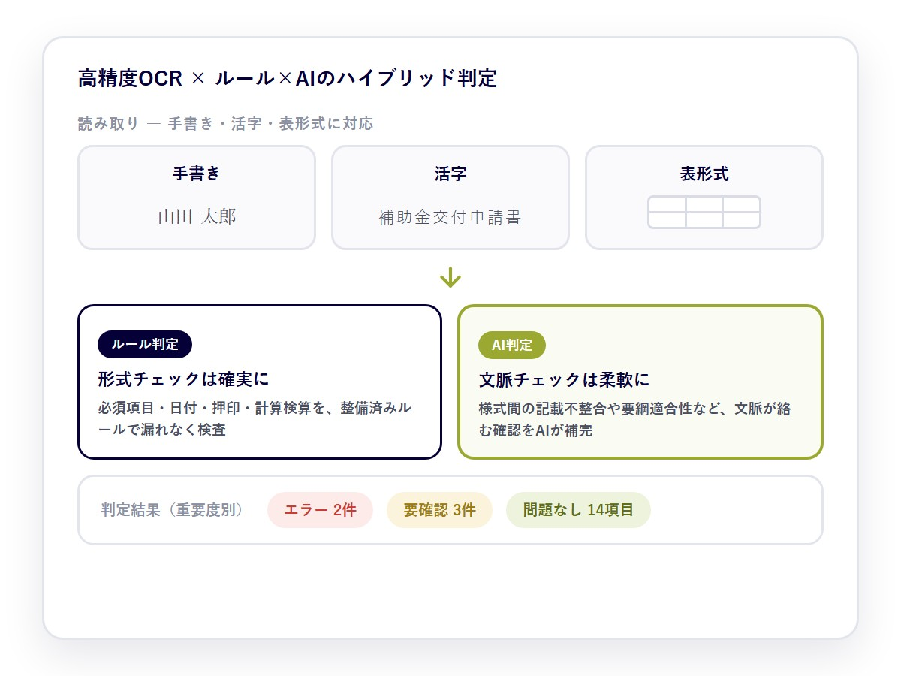
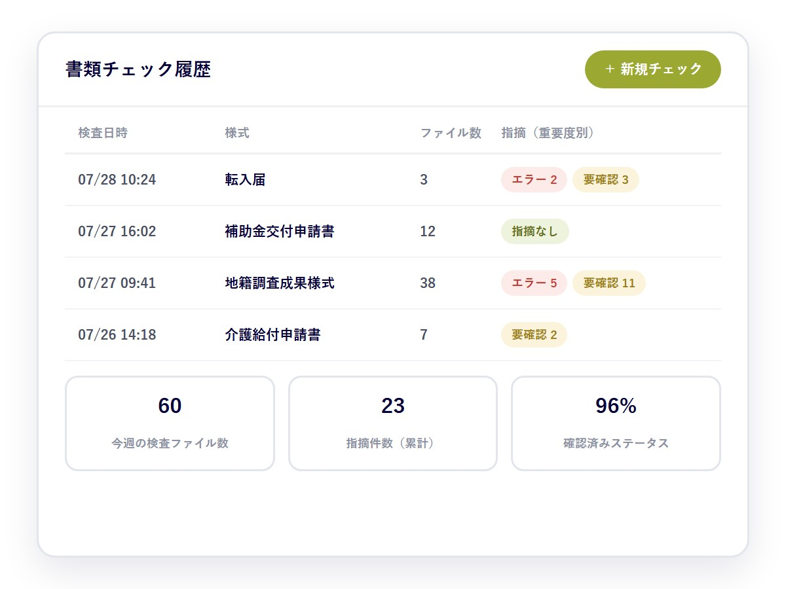

自治体の窓口審査から、医療・製造の現場書類、金融の申込書類まで。
定型書類の「目視チェック」に共通する、4つの構造的な悩み。
職員数が減少する一方で、申請件数・様式は増加。ベテラン職員の経験に依存した属人的な審査が続いています。
フリガナ漏れ・日付や押印の不備・記載の不整合。単純ミスの確認と差戻し対応が、審査部門の大きな負担になっています。
検査成績書・作業報告書などの帳票確認が目視中心。記載漏れや数値の転記ミスが、品質記録の信頼性に影響します。
カルテ・診療記録に加え、介護認定・給付申請などの書類確認が担当者の負担に。記載漏れの見逃しが差戻しにつながります。
※ 削減効果は導入実績に基づく参考値です。業務内容・書類量により異なります。トライアルにて実書類での効果を検証いただけます。
ルール整備の代行・PDF上での指摘表示・ハイブリッド判定・履歴管理。
書類チェックの根幹を、4つの柱として組み込みました。

チェック精度を左右する「ルール抽出」は、法令・条例・記入要領を当社専門チームが精査してデータベース化。ご利用者様の事前設定・ルール登録は一切不要で、導入初日から高精度なチェックをご利用いただけます。

問題のある記載欄をPDF上に枠でハイライトし、指摘理由と修正例をあわせて表示。指摘箇所を探す手間がなく、申請者への差戻し連絡もスムーズです。

手書き・活字・表形式の読み取りに対応した高精度OCRで記載内容を取得。形式チェックはルールで確実に、文脈が絡む判断はAIで柔軟に検査します。

最大数十ファイルの一括アップロードに対応。検査日時・ファイル数・指摘件数を一覧で把握でき、「エラー」「要確認」の色分けで優先順位付けが容易です。
形式チェックを自動化し、担当者は判断業務に集中
ルールの抽出・更新はSparticle専門チームが実施。事前設定・ルール登録は一切不要
ヒアリング・ルール構築・試行運用を経て本番へ。効果は実書類トライアルで確認してから判断可能
※ 約70%は導入実績に基づく参考値です。業務内容・書類量により異なります。トライアルにて実書類での効果を検証いただけます。
この機能の最大の特長は、チェックルールの整備・更新をSparticleが担うことです。
導入形態・セキュリティ要件は、貴社・貴庁のポリシーに沿ってご相談いただけます。オンプレミスAI導入の全体像はオンプレミスAI完全ガイド2026をご覧ください。
読み取り・判定・指摘の生成は、すべてAIが自動で実行。
ご利用者様の作業は2ステップで完結します。
複数ファイル・複数様式をドラッグ&ドロップするだけ。事前設定・ルール登録は不要です。
PDF上の枠表示と修正例を確認。注釈付きPDFの共有や、確認ステータスの記録もここで完結します。
様式と審査基準が文書化されている業務であれば、ルール化のうえ対応可能です。まずは対象業務のご相談から承ります。
戸籍・住民異動届の記載漏れから、支払票・領収書などの会計書類まで幅広く確認します。
申請書・実績報告書の必須項目、金額計算、要綱適合性を確認します。
地籍調査成果の様式チェックで実運用中。日々の検査を通じて、ルールを継続的に改善しています。
カルテ・診療記録の記載漏れ確認から、介護認定・給付申請書類の要件確認まで対応します。
現場帳票の記載漏れや数値の検算をチェックし、品質記録の信頼性を高めます。
保険申請書・口座開設書類の不備検出や、財務諸表の形式チェック・検算に対応します。
対応書類・手書き対応・ルール整備・セキュリティ・導入の流れなど、ご検討の段階でよくいただくご質問にお答えします。
様式と審査基準（法令・記入要領等）が文書化されている定型書類に対応します。自治体の戸籍・住民異動届や支払票・領収書、補助金申請、地籍調査、医療・福祉のカルテ・診療記録や認定申請書類、製造業の検査成績書・作業報告書、金融・保険の申請書や財務諸表、税務届出・入札関連書類など幅広く適用できます。まずは対象業務のご相談から承ります。
読み取れます。手書き・活字・表形式に対応した高精度OCRで記載内容を読み取ります。
ありません。法令・条例・記入要領からのルール抽出・構造化・精度チューニングは、すべてSparticleの専門チームが実施します。導入初日から高精度なチェックをご利用いただけます。
Sparticleが改正・様式改定をキャッチアップし、チェックルールを継続的に更新します。導入後も精度が劣化しない仕組みです。
できます。問題箇所をPDF上に枠で表示し、根拠文書に基づく指摘理由と修正例をあわせて提示します。注釈付きPDFの出力にも対応しています。
通信・保存データの暗号化、部署・担当者単位のアクセス権限管理、操作ログの記録に対応しています。個人情報の取り扱いは、貴社・貴庁のセキュリティポリシーに沿った運用形態をご相談のうえ決定します。
ヒアリング・様式収集（約2週間）、ルール抽出・構築（約1〜1.5ヶ月）、試行運用・精度検証（約1ヶ月）を経て本番運用に進みます。最短3ヶ月で本番運用が可能で、実書類でのトライアルにて指摘精度をご確認いただけます。